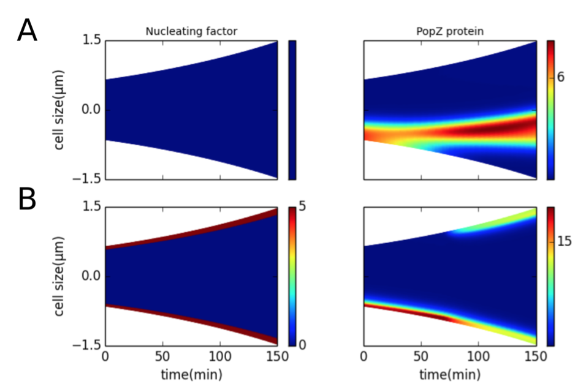
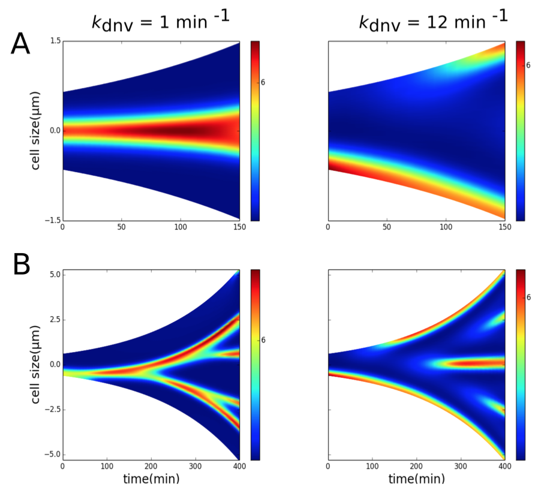
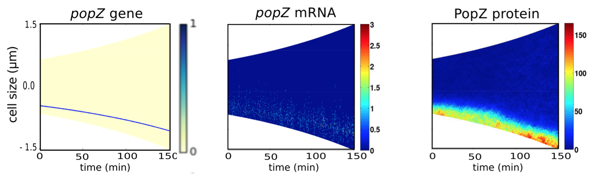
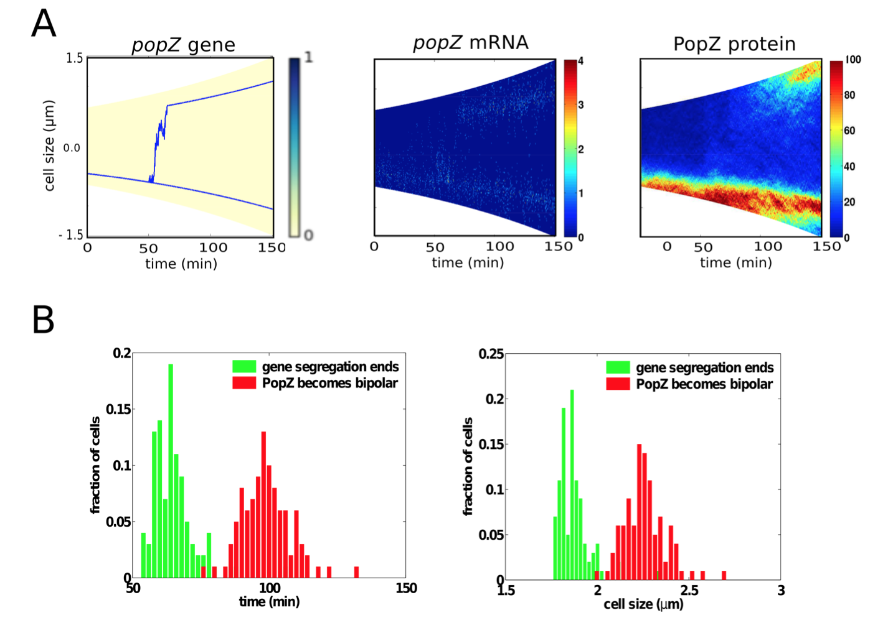
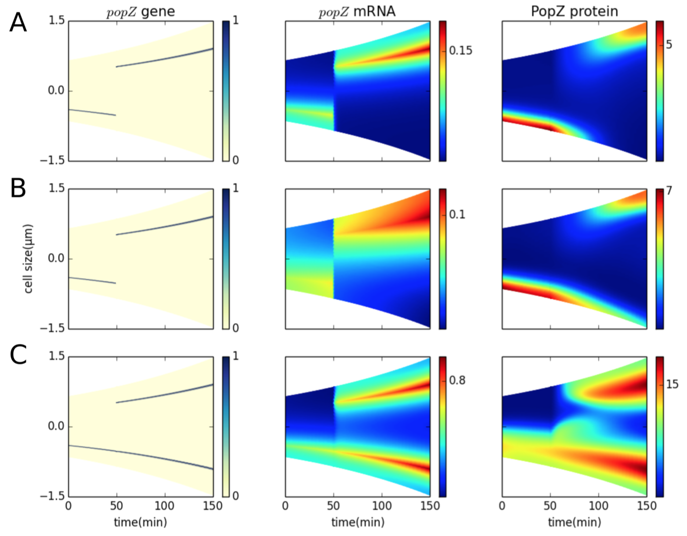

1. Transient polar localization of a nucleating factor may generate bipolar PopZ patterns

Figure 4.3: Presence of a nucleating factor at the poles can bias PopZ self-assembly at the poles. Color indicates concentration gradients from minimum (blue) to maximum (red). (A) Nucleating factor is present uniformly across the length of the cell during the cell cycle. (B) Nucleating factor is present in five compartments at each pole during the course of the cell cycle.
2. Bipolar patterns of PopZ can be generated in the absence of nucleating factors

Figure 4.4: Unipolar to bipolar transitions in PopZ localization can be realized in the absence of nucleating factors. Color indicates concentration gradients from minimum (blue) to maximum (red). (A) One division cycle (150 min). Left panel: kdnv = 1 min-1; a single PopZ focus forms at the center of the cell. Right panel: kdnv = 12 min-1; a PopZ focus forms at the old end of the cell, and a second focus forms at the new end at t = 100 min. (B) A non-dividing (filamentous) cell. Left panel: kdnv = 1 min-1; PopZ polymers undergo splitting to form a branched pattern as the cell grows. Right panel: kdnv = 1 min-1; new PopZ foci arise de novo as the cell grows.
3. Localization of slow diffusing popZ mRNA suggests that bipolarity requires the presence of two popZ genes

Figure 4.5: Stochastic simulations show that limited dispersal of mRNA produced from a single gene results in unipolar PopZ patterns. One popZ gene is present throughout the cell cycle at a distance of 0.2•Lt from the old pole producing mRNA with a diffusion coefficient of 0.05 μm2min-1. For popZ gene, color indicates presence (blue) or absence (yellow) of the gene. For popZ mRNA and PopZ protein, color indicates concentration gradients from minimum (blue) to maximum (red).

Figure 4.6: Stochastic simulation of the two-gene model. (A) One popZ gene (red) is constantly present at a distance of 0.2•Lt from the old pole, while a second popZ gene (blue) is introduced at t = 50 min. The second popZ gene is translocated across the cell until it reaches a distance of 0.2•Lt from the new pole. popZ mRNA (DmRNA = 0.05 μm2min-1) is produced by both genes. PopZ polymer shows a unipolar-to-bipolar transition at t = 92 min. For popZ gene, color indicates presence (blue) or absence (yellow) of the gene. For popZ mRNA and PopZ protein, color indicates concentration gradients from minimum (blue) to maximum (red). (B) Distribution of the time (left panel) and cell size (right panel) at which popZ gene segregation is completed (green bars) and PopZ becomes bipolar (red bars).
4. The two-gene model of PopZ localization recreates distribution patterns observed in mutant cells

Figure 4.7: The two-gene model can also account for observed PopZ distribution patterns in mutant cells. For popZ gene, color indicates presence (blue) or absence (yellow) of the gene. For popZ mRNA and PopZ protein, color indicates concentration gradients from minimum (blue) to maximum (red). (A) Shifting the position of a single popZ gene from the old pole to the new pole results in a corresponding shift in the polar localization of PopZ polymer (ksyn-mRNA = 2 min-1, DmRNA = 0.05 μm2min-1). (B) Transient bipolar localization of PopZ is observed under mild-overproduction (ksyn-mRNA = 3 min−1) and faster diffusion of mRNA (DmRNA = 0.5 μm2min-1). (C) Overexpression (ksyn-mRNA = 10 min-1) results in PopZ polymerizing further into the cytoplasm.
 webmaster
webmaster